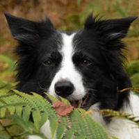

-

Salud de Perros
-
Las vacunas:
La vacunación es la mejor prevención posible contra las enfermedades corrientes que pueda sufrir el perro. Un perro debe ser vacunado cada año, hasta ser adulto: cuando el perro alcanza 5 años, es esencial consultar a un veterinario regularmente con el fin de detectar de manera precoz y prevenir las enfermedades que acompañan el envejecimiento. Para las vacunas, su veterinario es quién mejor puede ayudarle
-
Cuidado de Perros
-
La buena higiene y el buen cuidado de un perro depende principalmente de una buena prevención del conjunto de los problemas específicos que pueden alcanzar al animal. Conociéndolos y previniéndolos, lograremos que estos no lleguen. Y si lo hacen, podremos atajarlos a tiempo y minimizarlos.
El baño:
La mayoría de los perros disfrutan en el agua y se bañan de buena gana. Los baños les ayudan en los periodos de más calor y también son beneficiosos para la reeducación de los animales que han sufrido recientemente una intervención ósea o articular. Pero mucha atención con los baños en el mar. Están totalmente desaconsejados para los animales que sufren problemas cutáneos. Cuando su perro se haya bañado en el mar, es preferible enjuagarlo con agua dulce sin utilizar champú, con el fin de evitar cualquier irritación por la sal marina.
A la hora de bañar al perro cuidado con el champú que vas a utilizar: debe ser especial para ellos. ¡Nunca utilices champú para humanos! Atención también con los baños demasiado frecuentes que pueden ablandar el pelo duro de ciertas razas. Un paseo por el campo con tiempo lluvioso no necesita un baño al volver necesariamente. Puedes secar a tu compañero con una toalla para cepillarle luego con el fin de que reencuentre el brillo de su pelaje, sobre todo si es un perro de pelo largo.
El cepillado:
La muda se da dos veces al año en el perro. La más importante se sitúa en torno a mayo, a causa de la caída del pelo de invierno. El pelaje de verano cae hacia septiembre. Por tanto, en primavera y en otoño será natural que tu perro pierda abundantemente pelo. Si el perro vive en un entorno demasiado cálido y si, sobre todo, su cama está cerca de un radiador, su caída de pelo puede ser más frecuente. Debes examinar y cuidar a tu compañero regularmente. Acariciarlo ayuda al descubrimiento de posibles anomalías (presencia de garrapatas, por ejemplo), cualquiera que sea su corte y su pelo.
El cepillado elimina los pelos muertos y las suciedades acumuladas en el pelaje. El material de aseo variará dependiendo de la variedad del perro. La solidez y la separación de los dientes de las herramientas de cepillado dependen del pelaje. Generalmente se emplea un cepillo en puas metálicas, completado por un peine también de metal. Para los perros de pelaje espeso que tenga grandes mudas, puedes utilizar una almohaza.
Cuidado dental:
El tártaro dental que se adhiere cerca de las encías son los responsables del mal aliento en la boca del perro. La acumulación de este depósito en el cual se desarrollan bacterias va a incendiar la encía y puede acarrear, a largo plazo, una descalcificación de los dientes. Para prevenir el riesgo de gingivitis, tienes la posibilidad de cepillar los dientes de su perro con un dentífrico concebido especialmente por los animales. Una forma más simple es frotar con una compresa empapada en agua enrollada alrededor del dedo.
Cuidado de los oídos:
Debes verificar periódicamente el interior de las orejas de su perro (sobre todo con los perros con orejas colgantes, que son más propenso a enfermedades auditivas).
Cuidado de los ojos:
Puedes limpiar cada día la esquina de los ojos de su perro con algodón empapado en suero fisiológico o con agua hervida, con el fin de quitar las secreciones y evitar la aparición de coloraciones rojizas. Ciertos lagrimeos pueden ser causados por pelos demasiado largos que irritan los ojos. Si es el caso, puedes pedirle a un veterinario que los corte.
-
Alimentacion de Perros
-
La alimentación de un perro es vital para determinar la salud del animal. Por tanto, ésta debe ser saludable y equilibrada. De no ser así, de ser el aporte de nutrientes y energía inadecuado, la vida del animal puede correr peligro o acortarse innecesariamente. Actualmente, que nuestro perro siga una dieta correcta no es complicado, ya que en el mercado existe una amplia y variada gama de alimentos.
Las necesidades nutricionales de todos los perros se dividen en proteínas, energía (glúcidos y lípidos), minerales y vitaminas.